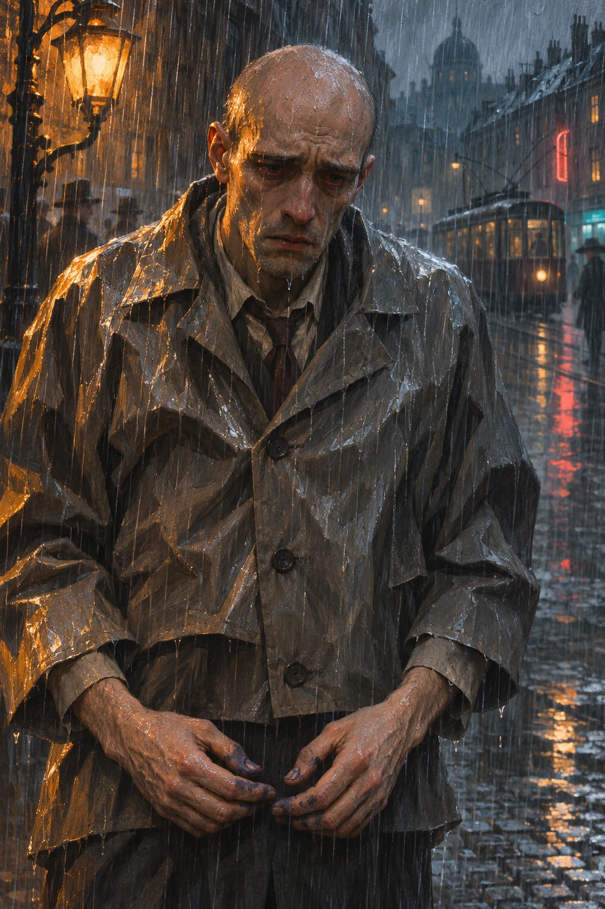

Увидеть живого Савелия Руна, принять заказ вдовы и понять, куда он ушёл с кладбища.
Клара Рун

Савелий РунХельга МеллерМатвей КордСтепан Фальк
Северное кладбище, три часа дня. Дождь идёт третью неделю, и кладбище стоит под зонтами — чёрными, одинаковыми, тяжёлыми от воды. Гроб закрыт. На мольберте у ямы — портрет: Савелий Рун, ночной кассир трамвайного парка, улыбается под летним зонтом рядом с женой. Священник читает быстро: вода заливает страницу. Вы приехали трамваем № 9 в 14:40; билет размок в кармане. Вы стоите в задних рядах, у тисов. Конрад поднимает фотоаппарат для «Вечернего листка» — и в видоискателе, в самом конце толпы, видит человека без зонта. Капли бегут по его лицу. Это Савелий Рун. Он смотрит на собственный гроб, потом прямо в объектив.
Подготовка и роли
ЛИСТ ВЕДУЩЕГО «Шкала и карта финала» (продолжение — в заметке вечера 2). Дорожка 0–10 (0 Холодно, 2 Слух, 4 След, 6 Свежий след, 8 Горячо, 10 Логово; выше 10 нет): ○ отряд, □ часовщики Хельги, △ артель Матвея; двигать карандашом вслух, с причиной. Старты □/△: в1 0/0 · в2 1/3 · в3 2/2 · в4 3/3 · в5 4/3 · в6 4/4; в7 ○ 3 и △ 2 (4 после П в в6), □ нет; в8 фишки стоят. ○ начинает с 0: +2 после вчерашнего П, +1 после Ч, +1 за вчерашний ✓. Тайно: после П в вечере 2 и позже — △ +2 в начале следующего вечера («Артель тоже что-то узнала»), пока Матвей не знает. ○: вещь или бумага +1 (не в сцене 3), верный вопрос +1 (снимок раз за вечер заменяет), услуга +2 (сразу □ +1, △ +1; десять крон вместо услуги — +2 без хода соперников, пять раз), срезанный путь +2 (СЛ 12; провал ○ +1, △ +1). □ и △: время в конце сцен 1 и 2 — □ +2, △ +1; шум △ +1 (драка, угроза, взлом, бег, крик, деньги на виду; бой +2); обиженный свидетель □ +1; осведомитель +2 (в2 △ после сцены 2, в3 □ после 1, в4 △ после 1, в5 □ после 2). Перед сценой 3: ○ не меньше обеих — ✓; иначе □, △ или □△; ничья — отряду. Звонок 4-17 в 23:00: П (правда), Ч (часть: место без людей и вещей), М (молчание или ложь); для свидетелей Ч — как молчание. Фора = число ✓; на крышах соперники и Фальк считаются от раунда входа Клары (К) — карта в заметке вечера 8. Трамвай № 3 — одна линия: Сухой причал — Шлюзовая застава (кладбище) — кольцо у «Ожидания» — Шлюзовая, на ночь в парк № 2 на Линейной. Савелий в вечерах 1–5 уходит на минуту раньше. Клара едет следом на 15–20 минут позже (на похороны она сама приехала № 9 в 14:55 — признак, не слежка): не показывать, не делать зловещей; она просит не найти его живым, а «скажите мне, где он».
lada-osher
gleb-shor
roman-ivren
Сцена 1 · 45 минут
Чёрные зонты
Положите на стол шкалу дистанции и похоронную карточку: ○ 0, □ 0, △ 0. Пусть игроки впишут свой билет: № 9, 14:40.
Священник частит, чернила на его странице плывут. На мольберте под навесом часовни — портрет: Савелий и Клара под одним зонтом, ручка — утиная голова с серебряным кольцом на шее. Кто рассмотрел или снял его — ○ +1. Конрад в видоискателе держит высокого человека без зонта у задней ограды: тот смотрит в объектив и отворачивается. Остальные видят мокрую шею и спину.
К яме рвётся Матвей Корд, брезентовая куртка, крюк на ремне: «Кто тут Рун? Где мой брат?» Его берут под руки, он орёт через плечо: «Ещё раз! Кто лежит под этим именем?»
Старый могильщик вычерпывает воду из ямы и ворчит: «Венки в часовню — ленты поплывут. Помогите, тогда скажу, что знаю». Спросите его, кто опознавал тело: «Вдова. Лица не смотрела — так в бумаге» (○ +1).
Высокий уходит к воротам; там звенит трамвай № 3, красный неон «КОЛЬЦО» дрожит в луже. Если герой его догнал, Савелий с задней площадки считает вслух, как кассир сдачу: «Раз. Два. Три. Двери закрываются». И тише: «Не сегодня». Кондуктор перекрывает подножку: «Мест нет. Следующий — через двенадцать минут». Двери закрываются.
Конец сцены: □ +2, △ +1.
Выборы
Бежать за Савелием через зонты (погоня на людях — △ +1)
Остаться у тисов, смотреть, куда он идёт, и снимать
Помочь могильщику занести венки в часовню (услуга: ○ +2, □ +1, △ +1)
Подойти к портрету и рассмотреть его вблизи
Проверка и путь без броска
Атлетика или Акробатика СЛ 12 — прорваться сквозь толпу. Успех: герой у ворот, когда трамвай № 3 отходит, и видит Савелия на задней площадке. Провал: Савелий потерян у тисов, но видны мокрые следы к задней ограде, к сторожке. Без броска: снимок Конрада показывает, куда он смотрел, — на сторожку. Числа сцены: портрет ○ +1, верный вопрос ○ +1, услуга ○ +2 (□ +1, △ +1), погоня △ +1. В конце сцены — время: □ +2, △ +1. У внимательного стола после сцены выйдет ○ 4, □ 3, △ 2.
Если не получилось
Если никто не смотрел на портрет, Клара в следующей сцене сама скажет про зонт: «Старый зонт я потеряла. Этот купила вчера» — улика всё равно открыта, но ○ +1 за неё не ставится. Если погоня шумная, артель запомнила лица отряда: Матвей в вечере 2 встретит словами «Это вы бегали по кладбищу».
Сцена 2 · 45 минут
Заказ под навесом
Дождь стучит по навесу часовни. Клара Рун подходит к отряду сама: чёрное пальто по фигуре, вуаль поднята, новый зонт с картонной биркой магазина ещё на ручке, перчатки сухие. Говорит тихо, ровно: «Вы смотрели туда, где его не может быть. Я тоже его видела».
Она пишет записку на листке из записной книжки и отдаёт Ванде (раздатка «Записка Клары Рун»: ○ +1) вместе с конвертом на пятьдесят крон. «Я не прошу вернуть его. Я прошу сказать мне, где он. Остальное — моё дело. Звоните в одиннадцать, каждый вечер. Даже если ничего. Особенно если что-то». Верный вопрос: «Куда он уходил, когда ему было плохо?» — «В порт. Он там вырос» (○ +1). И, помолчав перед именем: «Савелий всегда возвращался туда, где его жалели. Ищите тех, кто его жалеет».
У ворот Хельга Меллер в сером плаще с жетоном-циферблатом раздаёт карточки: «Сорок крон за звонок, если увидите покойного». И, когда отряд проходит мимо: «Мы не ломаем двери. Мы покупаем ключи». Клара смотрит на неё, не меняясь в лице: «Не пугайте его. Испуганный, он бегает быстрее».
Если за столом Регина Хольт, Клара благодарит её за пение в хоре, и Регина без броска видит: перчатки сухие, она не плакала. Если кто-то прямо обвиняет Клару, она холодно кладёт сверху ещё двадцать крон: «Семьдесят. Тогда найдите его и спросите сами» — и всё равно нанимает; звонки идут как обычно.
За колумбарием можно срезать к задней ограде, к сторожке (Атлетика СЛ 12: ○ +2; сорвался — ○ +1 и △ +1). Неон трамвайного кольца дрожит в луже у ворот. Конец сцены: □ +2, △ +1; ведущий сравнивает фишки вслух.
Выборы
Принять заказ и деньги
Взять заказ только на день
Отказаться от денег и искать самим (Клара: «Тогда просто звоните. Мне не нужны ваши деньги, мне нужен он»)
Срезать путь за колумбарием к задней ограде
Поспорить с Хельгой при Кларе
Проверка и путь без броска
Проницательность СЛ 13 — заметить, что Клара не плакала, а перчатки сухие; без броска Регина или любой герой видит бирку магазина на её новом зонте. Срезанный путь: Атлетика СЛ 12 (мокрая стена колумбария): успех ○ +2, провал ○ +1 и △ +1. Числа сцены: записка ○ +1, верный вопрос ○ +1. В конце сцены время: □ +2, △ +1. У внимательного стола перед сценой 3 выйдет ○ 8, □ 5, △ 3. Ведущий сравнивает фишки вслух: отряд первым — ✓ в ряд «Логова».
Если не получилось
Если отряд спорит с Хельгой при Кларе, Клара уходит под руку с Хельгой («Здесь не место»), □ +1, и нанимает отряд у ворот одной фразой: «Звоните». Записка всё равно у Ванды.
Сцена 3 · 45 минут
Сторожка
Логово вечера: сторожка у задней ограды, окно прямо на яму. Лужа на полу, на столе остывший чайник, отражение красного неона трамвайного кольца дрожит в мутном стекле. Улики этой сцены на шкалу не идут.
У калитки инспектор Фальк подписывает акт погребения, шляпа мокрая, нос в платке. «Вдова опознала — дело закрыто. Принесите мне живого — открою». На просьбу он даёт копию листа опознания (раздатка «Копия листа опознания»), а на вопрос о росте покойного бурчит: «Сто семьдесят один. Записал, что мерил». Спросят о ране — отводит глаза: «Пуля была. Вдова опознала — дело закрыто». Карточку протягивает Ванде: «Два-двенадцать. Только не ночью».
Сторожиха выглядывает из-за печи: «Высокий сидел с полудня, смотрел в окно на яму».
По шкале:
— ✓ (○ первым): на гвозде мужской зонт со сломанной спицей — зонт Савелия; в складке билет № 3, пробитый в 13:52, «от Сухого причала».
— Раньше □: зонт унесли часовщики — он приобщён к делу «Точного часа»; сторожиха: «Приехал с причала».
— Раньше △: сторожку перевернули, зонт унесли люди Матвея (он отдаст его в сделке вечера 5), сторожиха напугана; на полу порванный билет № 3.
— □△: сторожку перевернули, зонт у людей Матвея; Фальк раздражён: «Не мешайте закрытому делу» — копию листа даёт только завтра в участке.
Потом общий выбор: что сказать Кларе в 23:00.
Выборы
Осмотреть сторожку и расспросить сторожиху
Просить у Фалька копию листа опознания и его карточку
Спросить Фалька про рост покойного
Обсудить, что сказать Кларе в 23:00
Проверка и путь без броска
Расследование СЛ 12 — по билету № 3 понять, что Савелий приехал с Сухого причала; без броска Роман знает: № 3 — портовая линия, и этот билет пробит на конечной у Сухого причала. Ссора с Фальком: копию листа даёт дежурный в участке в вечере 2. В конце вечера отряд звонит Кларе (4-17, 23:00): П — правда, Ч — часть, М — молчание; ведущий записывает букву в ряд «Звонки».
Если не получилось
Если отряд поссорился с Фальком, копию листа даёт дежурный в участке в вечере 2 одной фразой, но Фальк не станет помогать, пока ему не принесут живого. Если билет не прочитали, сторожиха сама говорит: «Приехал с причала, на третьем».
Портрет у могилы
Фотография в чёрной рамке на мольберте под навесом часовни: мужчина и женщина летом, под одним чёрным зонтом. Ручка зонта — резная утиная голова с серебряным кольцом на шее. Стекло рамки заляпано дождём.
Что можно установить
На портрете Савелий Рун и Клара Рун под зонтом с утиной головой. На похоронах у Клары в руках другой зонт, новый, с картонной биркой магазина на ручке. Старого, с утиной головой, при ней нет.
Получение
Подойти к мольберту и рассмотреть портрет вблизи или посмотреть снимок Конрада: ручка зонта на фотографии видна ясно. Бросок не нужен.
Запасной путь
Если портрет не заметили, снимок попадает в «Вечерний листок» на следующий день, и Тимон или любой герой видит ручку на газетном оттиске. Либо Клара сама говорит: «Старый зонт я потеряла. Этот купила вчера».
Записка заказчицы
Листок из записной книжки, исписанный чернилами под навесом часовни, уголок размок. Подпись «К. Рун» начинается с крупной буквы.
Что можно установить
Почерк Клары Рун: большая круглая петля на букве «Р» в подписи «К. Рун». Эту петлю можно сравнить с другими подписями «Р» в деле.
Получение
Клара пишет записку при отряде во время найма (сцена под навесом) и отдаёт её лично. Достаточно взять листок в руки и запомнить, как выведена «Р».
Запасной путь
Если записку не взяли или потеряли, та же подпись стоит на расписке, вложенной в конверт с пятьюдесятью кронами. Конверт у героя, который принял деньги.
Лист опознания
Канцелярский бланк участка на Шлюзовой с описью вещей, штамп «Дело закрыто», влажные пятна по краям.
Что можно установить
Покойный: рост 171 см; пальто тёмно-синее, ярлык «Бранд и сын»; в кармане размокший проездной Трамвайного парка № 2 на имя С. Руна; кольца нет. Опознала жена по пальто и проездному, от осмотра лица отказалась.
Получение
Попросить копию у инспектора Фалька у калитки кладбища или в участке на Шлюзовой. Он даёт её за вежливую просьбу, бросок не нужен.
Запасной путь
Если с Фальком поссорились, дежурный в участке в следующий вечер выдаёт копию одной фразой. Регина или Ванда могут переписать лист от руки.
Изменения после решений
Если Звонок в 23:00 — П (правда) или Ч (часть). → В начале вечера 2 ○ +2 после П, +1 после Ч; Клара: «Сухой причал. Сторож Стель знал его отца».
Если Отряд гнался за Савелием через похоронную толпу → Артель запомнила лица: в вечере 2 Матвей у ворот сразу говорит «Это вы бегали по кладбищу».
Если Отряд спорил с Хельгой при Кларе или с Фальком → □ +1; копию листа опознания отряд получит позже в участке на Шлюзовой, а Хельга запомнит их.
Выдать в нужный момент
Шкала дистанции — Начало вечера 1, кладётся на стол и остаётся на столе всю кампанию; ведущий двигает фишки карандашом.
Записка Клары Рун — Сцена найма под навесом часовни, вечер 1, когда Клара пишет и отдаёт записку.
Копия листа опознания — Фальк передаёт копию у калитки кладбища (сцена 3 вечера 1) или позже в участке на Шлюзовой.
Завершение вечера
Ночью Конрад проявляет плёнку (снимок с похорон): в толпе зонтов — мокрое лицо Савелия, глаза в объектив. В 23:00 отряд у автомата набирает 4-17 и решает, что сказать Кларе: правду, часть или молчание. Ведущий записывает букву. Клара переспрашивает имена и благодарит: «Благодарю. Мне важна каждая мелочь — где он ел, где спал». Из трубки слышно, как далеко звенит трамвай.